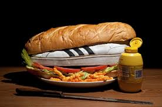

Shoe Sub

Description
Have an old pair of sneakers that are read to retire?
Then this is the perfect treat you can make for your pooch!
Ingredients
- Sub roll (french, cuban, hoggie, your call)
- Worn stinky shoe (the older the better)
- Mayo
- Mustard
- Lettuce
- Tomatoes
- Pickles
- lunch meat is optional
Directions
- Smother inside of bread with mayo and mustard
- Layer lettuce, tomatoes and pickles
- Optional: Stuff shoe with lunch meat
- Place shoe between bread and smoosh close